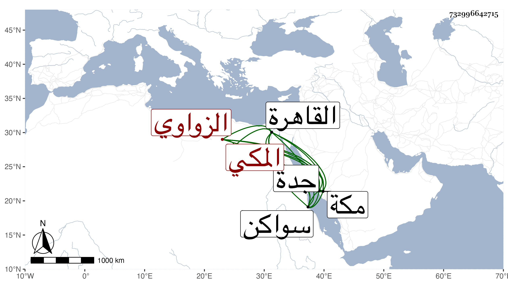

0902Sakhawi.DawLamic.ITO20230111-ara1.EIS1600.732996642715
Biography ID: 732996642715
167
محمد بن مسعود بن صالح بن أحمد بن محمد الجمال الزواوي المكي نزيل القاهرة . ولد في سنة ثمان وتسعين وسبعمائة بمكة ونشأ بها وسمع الصحيح على ابن صديق وكذا سمع من الشريف عبد الرحمن الفاسي وأبي الطيب السحولي ومحمد ابن عبد الله البهنسي الشفا هوت وأجاز له في سنة خمس فيما بعدها العراقي والهيثمي والمراغي وعائشة ابنة ابن عبد الهادي والمجد اللغوي وخلق وتردد لجزيرة سواكن للتسبب فأثرى سيما وكان يسامح في العشور بجدة لاعتقاد صاحب مكة في أبيه . ولقيته في رجب سنة خمسين بالقاهرة فأجاز لي ولأخوي ، ورجع إلى مكة فمات بها في ذي الحجة سنة تسع وخمسين وخلف ذكرا وأنثى وتركة لها صورة سامحه الله . وكان قد تزوج زينب ابنة النوري على بن الزين بكرا واستولدها الذكر المشار إليه واسمه أحمد وهو بالبهاليل أقرب .
